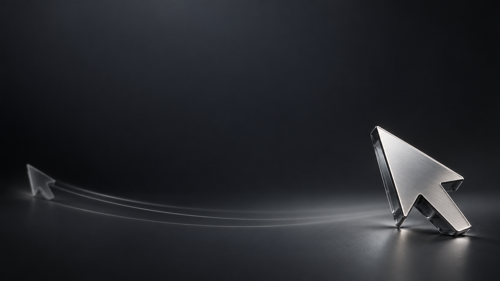

Move freelyShare with focus
Freeze or hide your shared cursor
while your mouse keeps working
Windows x64 · Version 0.1.7 · Unsigned EXE

Freeze or hide your shared cursor
while your mouse keeps working
Windows x64 · Version 0.1.7 · Unsigned EXE